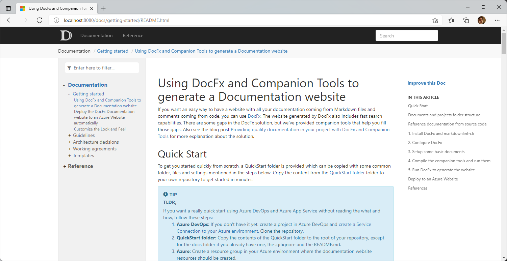
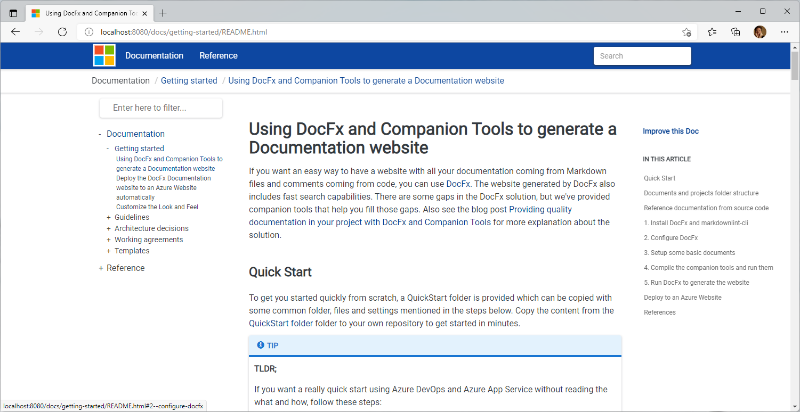
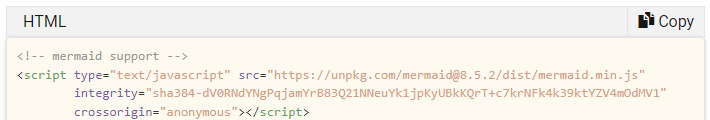
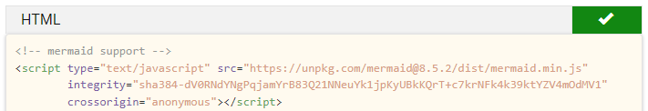
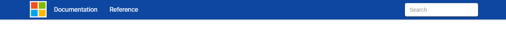

Customize the Look and Feel
If you don't configure it, DocFx will generate a website with an out-of-the-box template. The website for this Quick Start is then generated to this:

For this website we created a custom template with a few extra's. That results in this look-and-feel:

In docs\.docfx\template you can find the custom template for generating the documentation website. The basic template is first referenced in docfx.json to apply the defaults. As second template our custom template is configured. This will add or overwrite files of the default, in our case at least main.css. In the template we also enabled diagram support through Mermaid in scripts.tmpl.partial.
Material design
We chose the DocFx Material Theme as a starting point of our custom template. The Material.zip was downloaded and extracted. It contains a modified styles\main.css.
Mermaid support
To enable the rendering of Mermaid diagrams in the documentation website, the code below can be added to partials\scripts.tmpl.partial.
<!-- Support for diagrams (Mermaid). See https://mermaid.js.org/intro/n00b-gettingStarted.html -->
<script type="module">
import mermaid from 'https://cdn.jsdelivr.net/npm/mermaid@10/dist/mermaid.esm.min.mjs';
mermaid.initialize({ startOnLoad: true });
</script>
By adding this, mermaid diagrams are rendered in the website.
A sample Mermaid diagram could be something like:
gantt
title Example Gantt diagram with Mermaid
dateFormat YYYY-MM-DD
section Team 1
Research & requirements :done, a1, 2021-03-08, 2021-04-10
Review & documentation : after a1, 20d
section Team 2
Implementation :crit, active, 2021-03-25 , 20d
Testing :crit, 20d
which will be rendered as:
gantt
title Example Gantt diagram with Mermaid
dateFormat YYYY-MM-DD
section Team 1
Research & requirements :done, a1, 2021-03-08, 2021-04-10
Review & documentation : after a1, 20d
section Team 2
Implementation :crit, active, 2021-03-25 , 20d
Testing :crit, 20d
'Copy code'-button
It can be desirable to have a copy button on code blocks to copy the contents to the clipboard for easy re-use. We have added this solution to the template for the website. In the Styles folder two files were added: copyCodeButton.css and copyCodeButton.js. In partials\scripts.tmpl.partial the JavaScript file is referenced:
...
<script type="text/javascript" src="{{_rel}}styles/copy-code-button.js"></script>
...
And in partials\head.tmpl.partial the CSS file is referenced:
...
<link rel="stylesheet" href="{{_rel}}styles/copy-code-button.css">
...
When this is added, code blocks will have a Copy-button like this:

When a user clicks the Copy-button, the contents is copied into the clipboard and the icon changes for some time to indicate the copy was succesfull:

The Logo

The logo of the website is images\logo.png. The configuration is done in docfx.json for both the logo to use and the favorite icon to use like this:
"globalMetadata": {
"_appTitle": "QuickStart Documentation",
"_appName": "QUickStart Documentation",
"_appLogoPath": "images/logo.png",
"_appFaviconPath": "images/favicon.ico",
"_enableSearch": true,
"_enableNewTab": true
}
Header Bar Color
If you want to change the color of the header bar, open styles\main.css and modify the --header-bg-color value. If you want to make sure it's a web safe color, you can use a website like Color Tools.NET to make your selected color web safe.